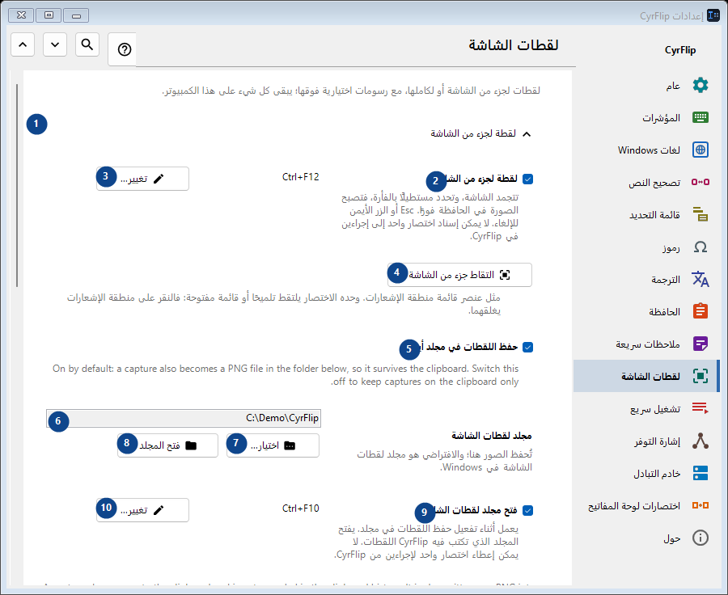
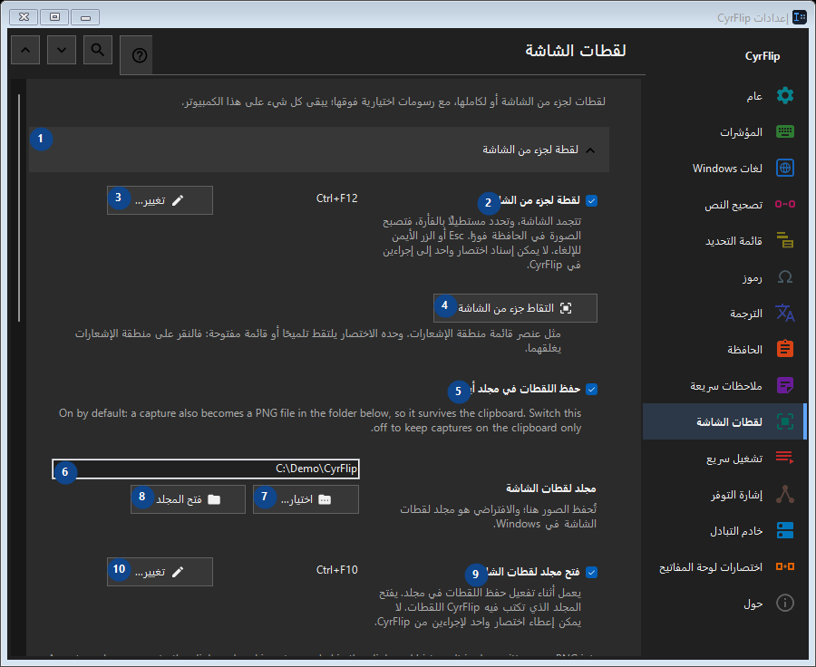

لقطات الشاشة
الغرض
لقطات لجزء من الشاشة أو لكاملها، مع رسومات اختيارية فوقها؛ يبقى كل شيء على هذا الكمبيوتر.


ترتيب الاستخدام
تُطبق الإعدادات فورًا. لا يوجد ترتيب إلزامي؛ استخدم المجموعات أدناه.
العناصر
1. لقطة لجزء من الشاشة
استخدم هذا الأمر لتنفيذ الإجراء المذكور. اقرأ أي طلب تأكيد قبل الموافقة.
اختصاراتك2. لقطة لجزء من الشاشة
تتجمد الشاشة، وتحدد مستطيلًا بالفأرة، فتصبح الصورة في الحافظة فورًا. Esc أو الزر الأيمن للإلغاء. لا يمكن إسناد اختصار واحد إلى إجراءين في CyrFlip.
اختصاراتك3. تغيير - لقطة لجزء من الشاشة
استخدم هذا الأمر لتنفيذ الإجراء المذكور. اقرأ أي طلب تأكيد قبل الموافقة.
اختصاراتك4. التقاط جزء من الشاشة
مثل عنصر قائمة منطقة الإشعارات. وحده الاختصار يلتقط تلميحًا أو قائمة مفتوحة: فالنقر على منطقة الإشعارات يغلقهما.
اختصاراتك5. حفظ اللقطات في مجلد أيضًا
On by default: a capture also becomes a PNG file in the folder below, so it survives the clipboard. Switch this off to keep captures on the clipboard only.
اختصاراتك6. مجلد لقطات الشاشة
اختر أو أدخل القيمة الموضحة بجانب الحقل. راجعها قبل المتابعة.
اختصاراتك7. اختيار - مجلد لقطات الشاشة
استخدم هذا الأمر لتنفيذ الإجراء المذكور. اقرأ أي طلب تأكيد قبل الموافقة.
اختصاراتك8. فتح المجلد - مجلد لقطات الشاشة
استخدم هذا الأمر لتنفيذ الإجراء المذكور. اقرأ أي طلب تأكيد قبل الموافقة.
اختصاراتك9. فتح مجلد لقطات الشاشة
يعمل أثناء تفعيل حفظ اللقطات في مجلد. يفتح المجلد الذي تكتب فيه CyrFlip اللقطات. لا يمكن إعطاء اختصار واحد لإجراءين من CyrFlip.
اختصاراتك10. تغيير - فتح مجلد لقطات الشاشة
استخدم هذا الأمر لتنفيذ الإجراء المذكور. اقرأ أي طلب تأكيد قبل الموافقة.
اختصاراتك11. لقطة لكامل الشاشة
استخدم هذا الأمر لتنفيذ الإجراء المذكور. اقرأ أي طلب تأكيد قبل الموافقة.
اختصاراتك12. لقطة لكامل الشاشة
ضغطة واحدة: تُلتقط كل الشاشات كصورة واحدة وتذهب مباشرة إلى الحافظة. لا يتجمد شيء على الشاشة.
اختصاراتك13. تغيير - لقطة لكامل الشاشة
استخدم هذا الأمر لتنفيذ الإجراء المذكور. اقرأ أي طلب تأكيد قبل الموافقة.
اختصاراتك14. التقاط كامل الشاشة
مثل عنصر قائمة منطقة الإشعارات "لقطة لكامل الشاشة".
اختصاراتك15. الرسم على اللقطات
استخدم هذا الأمر لتنفيذ الإجراء المذكور. اقرأ أي طلب تأكيد قبل الموافقة.
اختصاراتك16. الرسم على اللقطات
بعد اللقطة تبقى الصورة المجمدة على الشاشة: ارسم بيضاوات ومستطيلات وخطوطًا وأسهمًا.
اختصاراتك17. لقطة جزء مع رسم
Capture a selected region and draw on it. One chord cannot belong to two CyrFlip actions.
اختصاراتك18. تغيير - لقطة جزء مع رسم
استخدم هذا الأمر لتنفيذ الإجراء المذكور. اقرأ أي طلب تأكيد قبل الموافقة.
اختصاراتك19. لقطة كامل الشاشة مع رسم
Capture every display as one picture and draw on it. One chord cannot belong to two CyrFlip actions.
اختصاراتك20. تغيير - لقطة كامل الشاشة مع رسم
استخدم هذا الأمر لتنفيذ الإجراء المذكور. اقرأ أي طلب تأكيد قبل الموافقة.
اختصاراتك21. التقاط جزء والرسم
مثل اختصار "لقطة جزء مع رسم".
اختصاراتك22. التقاط كامل الشاشة والرسم
مثل اختصار "لقطة كامل الشاشة مع رسم".
اختصاراتك